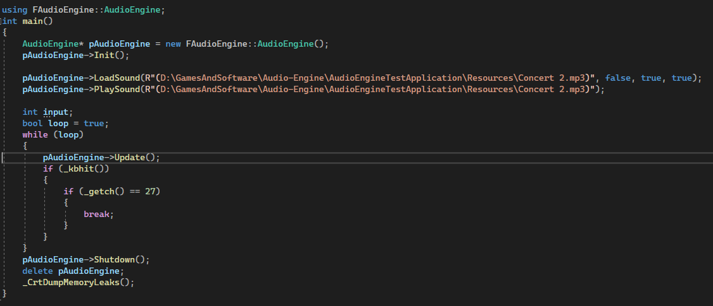

After having seen the GDC talk with Guy Somberg, I wanted to make an Audio Engine. And the end goal is to have an engine that can simulate different behaviours.
Currently I have 3 main objectives that I want to complete before the project becomes one big ball of ideas that I want to cram in.
- Basic Engine functions with FMOD
- Doppler
- Portals
At the end of these objectives I also should have an Unreal Engine implementation.
Basic Engine functions with FMOD
For the start of this project I'm using Guy Somberg's first book about audio programming.
Currently I have to decide what I'll use for reading and storing metadata. After this I'll implement FMOD events.
I also have made another visual studio project for testing the engine. Which already learned me a lot, just by implementing the library and thought me why you should not ignore the C++ coding standards. Because I like to put small functions that don't need to be in a class in just the header file.
I still need to change a lot to make it more usable for implementing it in an actual Game Engine.

Doppler
Although this is not implemented, I do want to explain why it gets its own objective.
FMOD does have an option to simulate the doppler effect and delay is also taken into account. But it does no take into account the environment for the delay.
Although most games play in an "air" environment, what if a game is in a fictional space or underwater. Soundwaves travel faster through water than air.
Portals
I stumbled across a video of Deadspace Remake where they simply explain the portal system for locating sounds in corridors. This gave me the idea.
MORE
I do have more ideas I want to implement, but I'll not yet announce them on here as I still have some other ideas of projects I want to work on. Giving that they are not full-time projects.